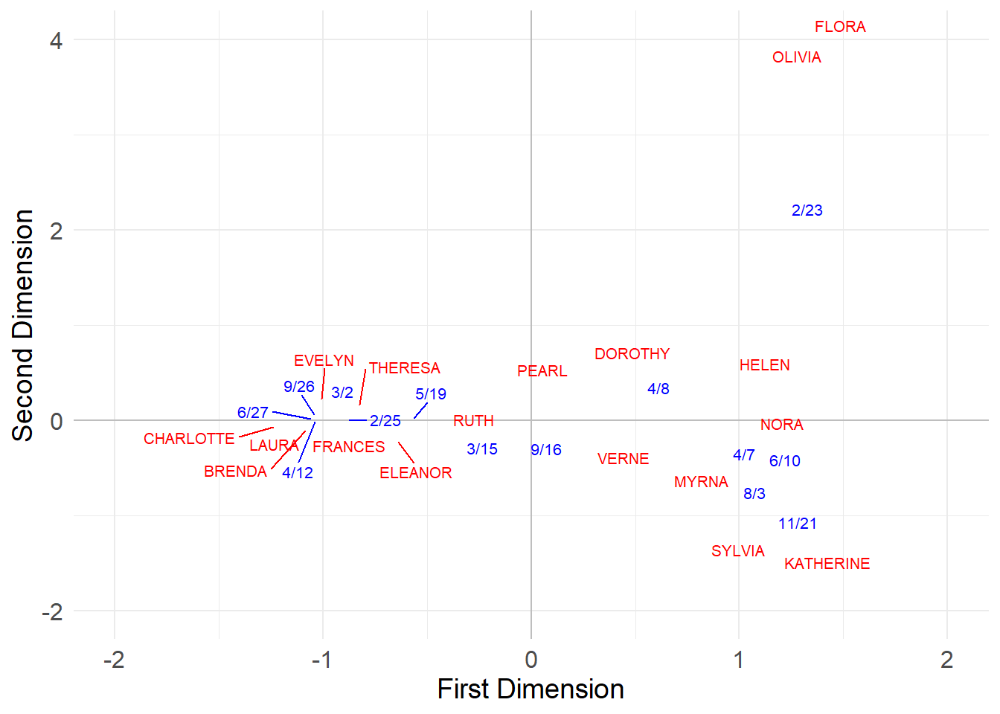
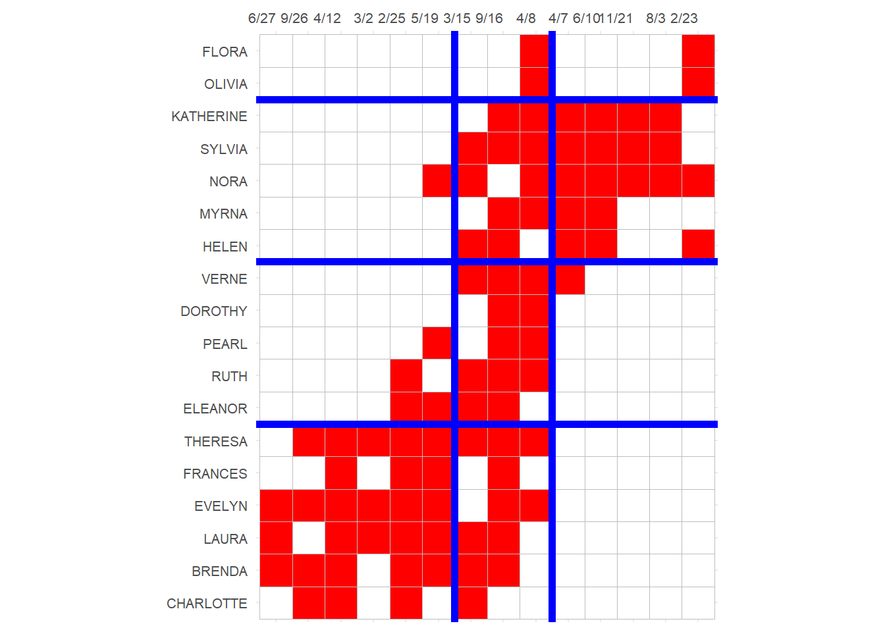

Correspondence Analysis (CA) a relatively simple way to analyze and visualize two-mode data. As you might have already guessed, two-mode CA boils down to the eigendecomposition of a suitable matrix, derived from the original affiliation (bi-adjacency) matrix of a two-mode network.
The goal is to come up with a low-rank (usually two-dimensional) approximation of the original affiliation network using the eigenvectors and eigenvalues obtained from the decomposition, as we did above with our toy example.
So which matrix should be use for CA?
Let’s find out:
First we need to create row stochastic versions of the affiliation matrix and its transpose \(\mathbf{A}\) and \(\mathbf{A}^T\). Recall that a matrix is row stochastic if their rows sum to one.
For the people, we can do this by taking the original affiliation matrix, and pre-multiplying it by a diagonal square matrix\(\mathbf{D}_P^{-1}\) of dimensions \(M \times M\) containing the inverse of the degrees of each person in the affiliation network along the diagonals and zeros everywhere else, yielding the row-stochastic matrix \(\mathbf{P}_{PG}\) of dimensions \(M \times N\):
And we can do the same with the groups, except that we pre-multiply the transpose of the original affiliation matrix by \(\mathbf{D}_G^{-1}\) which is an \(N \times N\) matrix containing the inverse of the size of each group along the diagonals and zero everywhere else, this yields the matrix \(\mathbf{P}_{GP}\) of dimensions \(N \times M\):
Which produces the matrix \(\mathbf{P}_{PP}\) a square \(M \times M\) matrix containing the degree-normalized similarities between each pair of people.
Which produces the matrix \(\mathbf{P}_{GG}\) a square \(N \times N\) matrix containing the degree-normalized similarities between each pair of groups.
In R we obtain these matrices as follows:
Code
P.pp <- P.pg %*% P.gpP.gg <- P.gp %*% P.pg
Which are still row stochastic–but now square–matrices:
Code
rowSums(P.pp)
EVELYN LAURA THERESA BRENDA CHARLOTTE FRANCES ELEANOR PEARL
1 1 1 1 1 1 1 1
RUTH VERNE MYRNA KATHERINE SYLVIA NORA HELEN DOROTHY
1 1 1 1 1 1 1 1
OLIVIA FLORA
1 1
What are these numbers? Well, they can be interpreted as probabilities that a random walker starting at the row node and, following any sequence of \(person-group-person'-group'\) hops, will reach the column person. Thus, higher values indicate an affinity or proximity between the people (and the groups in the corresponding matrix).
1 Performing CA
We went through all these steps because CA is equivalent to the eigendecomposition of the last two square matrices we obtained, namely, \(\mathbf{P_{PP}}\) and \(\mathbf{P_{GG}}\):
So this is interesting. The first eigenvector of the decomposition of both \(\mathbf{P_{PP}}\) and \(\mathbf{P_{GG}}\) is just the same number for each person and group. Note that this is the eigenvector that is associated with the first eigenvalue which happens to be \(\lambda_1 = 1.0\).
So it looks like the first eigenvector is a pretty useless quantity (a constant) so we can discard it, keeping all the other ones. Now the old second eigenvector is the first, the old third is the second, and so on:
The magnitude of the eigenvalue tells us how important is the related eigenvector in containing information about the original matrix. It looks like here, the first two eigenvectors contain a good chunk of the info.
We can check how much exactly by computing the ratio between the sum of the first two eigenvalues over the sum of all the eigenvalues:
Code
round(sum(eig.vals[1:2]) /sum(eig.vals), 2)
[1] 0.57
Which tells us that the first two eigenvectors account for about 57% of the action (or more precisely we could reconstruct the original matrix with 57% accuracy using just these two eigenvectors and associated eigenvalues).
Because the magnitude of the CA eigenvectors don’t have a natural scale, it is common to normalize them to have a variance of 1.0 (Fouss et al. 2016, 399), and the multiplying them by the square root of the eigenvalue corresponding to that dimension, so that the new variance is scaled to the importance of that dimension.
We can perform the normalization of the raw CA scores using the following function, which performs CA on the affiliation matrix:
Code
norm.CA.vec <-function(x) { D.p <-diag(rowSums(x)) # degree matrix for persons D.g <-diag(colSums(x)) # degree matrix for groups i.Dp <-solve(D.p) # inverse of degree matrix for persons i.Dg <-solve(D.g) # inverse of degree matrix for groups CA.p <-lapply(eigen(i.Dp %*% x %*% i.Dg %*%t(x)), Re) # person CA CA.g <-lapply(eigen(i.Dg %*%t(x) %*% i.Dp %*% x), Re) # group CA ev <- CA.p$values[2:length(CA.g$values)] m <-length(ev) CA.p <- CA.p$vectors[, 2:ncol(CA.p$vectors)] CA.g <- CA.g$vectors[, 2:ncol(CA.g$vectors)]rownames(CA.p) <-rownames(A)rownames(CA.g) <-colnames(A) Z.u.p <-matrix(0, nrow(x), m) Z.u.g <-matrix(0, ncol(x), m) Z.v.p <-matrix(0, nrow(x), m) Z.v.g <-matrix(0, ncol(x), m)rownames(Z.u.p) <-rownames(x)rownames(Z.u.g) <-colnames(x)rownames(Z.v.p) <-rownames(x)rownames(Z.v.g) <-colnames(x)for (i in1:m) { ev.p <-as.matrix(CA.p[, i]) ev.g <-as.matrix(CA.g[, i]) norm.p <-as.numeric(t(ev.p) %*% D.p %*% ev.p) # person norm Z.u.p[, i] <- ev.p *sqrt(sum(A) / norm.p) # normalizing to unit variance Z.v.p[, i] <- Z.u.p[, i] *sqrt(ev[i]) # normalizing to square root of eigenvalue norm.g <-as.numeric(t(ev.g) %*% D.g %*% ev.g) # group norm Z.u.g[, i] <- ev.g *sqrt(sum(A) / norm.g) # normalizing to unit variance Z.v.g[, i] <- Z.u.g[, i] *sqrt(ev[i]) # normalizing to square root of eigenvalue }return(list(Z.u.p = Z.u.p, Z.u.g = Z.u.g,Z.v.p = Z.v.p, Z.v.g = Z.v.g ))}
This function takes the bi-adjacency matrix as input and returns two new set of normalized CA scores for both persons and groups as output. The normalized CA scores are stored in four separate matrices: \(\mathbf{Z_P^U}, \mathbf{Z_G^U}, \mathbf{Z_P^V}, \mathbf{Z_G^V}\).
One person-group set of scores is normalized to unit variance (Z.u.p and Z.u.g) and the other person-group set of scores is normalized to the scale of the eigenvalue corresponding to each CA dimension for both persons and groups (Z.v.p and Z.v.g).
Let’s see the normalization function at work, extracting the first two dimensions for persons and groups (the first two columns of each \(\mathbf{Z}\) matrix):
Great! Now we have two sets (unit variance versus eigenvalue variance) of normalized CA scores for persons and groups on the first two dimensions.
2 The Duality of Persons and Groups CA Scores
Just like as we saw when discussing the Bonacich Eigenvector centrality in the two-mode case, there is a duality between the CA scores assigned to the person and the groups on each dimension, such that the scores for each person are a weighted sum of the scores assigned to each group on that dimension and vice versa (Faust 1997, 171).
The main difference is that this time we sum scores across the \(\mathbf{P_P}\) and \(\mathbf{P_G}\) matrices rather than the original affiliation matrix and its transpose, resulting in degree-weighted sums of scores for both persons and groups.
So for any given person, on any given dimension, let’s say \(EVELYN\), her CA score is given by the sum of the (unit variance normalized) CA scores of the groups she belongs to weighted by her degree (done by multiplying each CA score by the relevant cell in Evelyn’s row of the \(\mathbf{P}_{PG}\) matrix):
Code
sum(P.pg["EVELYN", ] * uni.g[, 1])
[1] -0.7994396
Which is the same as the (eigenvalue variance) normalized score we obtained via CA for \(EVELYN\):
Code
val.p["EVELYN", 1]
EVELYN
-0.7994396
A similar story applies to groups. Each group score is the group-size-weighted sum of the (unit variance normalized) CA scores of the people who join it:
Code
sum(P.gp["6/27", ] * uni.p[, 1])
[1] -1.051052
Which is the same as the (eigenvalue variance normalized) score we obtained via CA:
Code
val.g["6/27", 1]
6/27
-1.051052
Neat! Duality at work.
3 Visualizing Two-Mode Networks Using CA
And, finally, we can use the first two (eigenvalue variance) normalized CA scores to plot the persons and groups in a common two-dimensional space:
Code
val.g[, 2] <- val.g[, 2] *-1# flippling sign of group scores on second dimension for plotting purposesplot.dat <-data.frame(rbind(uni.p, val.g)) %>%cbind(type =as.factor(c(rep(1, 18), rep(2, 14))))library(ggplot2)# install.packages("ggrepel")library(ggrepel)p <-ggplot(data = plot.dat, aes(x = X1, y = X2, color = type))p <- p +geom_hline(aes(yintercept =0), color ="gray")p <- p +geom_vline(aes(xintercept =0), color ="gray")p <- p +geom_text_repel(aes(label =rownames(plot.dat)),max.overlaps =20, size =2.75)p <- p +theme_minimal()p <- p +theme(legend.position ="none",axis.title =element_text(size =14),axis.text =element_text(size =12))p <- p +scale_color_manual(values =c("red", "blue"))p <- p +labs(x ="First Dimension", y ="Second Dimension")p <- p +xlim(-2, 2) +ylim(-2, 4)p

In this space, people with the most similar patterns of memberships to the most similar groups are placed close to one another. In the same way, groups with the most similar members are placed closed to one another.
Also like before, we can use the scores obtained from the CA analysis to re-arrange the rows and columns of the original matrix to reveal blocks of maximally similar persons and events:
Code
library(ggcorrplot)p <-ggcorrplot(t(A[order(val.p[, 1]), order(val.g[, 1])]),colors =c("white", "white", "red"))p <- p +theme(legend.position ="none",axis.text.y =element_text(size =8),axis.text.x =element_text(size =8, angle =0),)p <- p +scale_x_discrete(position ="top")p <- p +geom_hline(yintercept =6.5, linewidth =2, color ="blue")p <- p +geom_hline(yintercept =11.5, linewidth =2, color ="blue")p <- p +geom_hline(yintercept =16.5, linewidth =2, color ="blue")p <- p +geom_vline(xintercept =9.5, linewidth =2, color ="blue")p <- p +geom_vline(xintercept =6.5, linewidth =2, color ="blue")p

Here CA seems to have detected two separate clusters of actors who preferentially attend two distinct clusters of events!
The three events in the middle {3/15, 9/16, 4/8} don’t seem to differentiate between participants in each cluster (everyone attends)–they thus appear near the origin in the CA diagram, indicating a weak association with either dimension.
However, the events to the left (with clusters of participants in the lower-left) and to the right of the x-axis (with clusters of participants in the upper-right) are attended preferentially by distinct groups of participants; they thus appear at the extreme left and right positions of the first dimension of the CA diagram.
In the same way, the four people in the middle {Ruth, Dorothy, Pearl, Verne} only attend the undifferentiated, popular events, so that means that they are not strongly associated with either cluster of actors (and thus appear near the origin in the CA diagram). The top and bottom participants, by contrast, appear to the extreme right and left in the CA diagram, indicating a strong association with the underlying dimensions.
4 Another way of Performing CA in a Two-Mode Network
Sciarra et al. (2020) suggest an alternative way of computing CA for two-mode networks that avoids the issue of having to do the eigendecomposition of an asymmetric matrix (like the \(\mathbf{P}_{PP}\) and \(\mathbf{P}_{GG}\)) above. Their suggestion is to normalize the biadjacency matrix \(\mathbf{A}\), before computing the degree-weighted projections, according to the formula:
The matrices \(\mathbf{P}\) and \(\mathbf{G}\) no longer have the nice interpretation of being Markov transition matrices that the \(\mathbf{P}_{pp}\)\(\mathbf{P}_{gg}\) matrices have, but the fact that they are symmetric can be an advantage in facilitating the eigendecomposition computation, as they are guaranteed to have real-valued solutions.
As Sciarra et al. (2020, 3) also note, to have the eigenvectors obtained via this procedure match the CA scores, we need to rescale the standard CA scores by multiplying them by the square root of the degrees of the row and column nodes:
Fouss, François, Marco Saerens, and Masashi Shimbo. 2016. Algorithms and Models for Network Data and Link Analysis. Cambridge University Press.
Sciarra, Carla, Guido Chiarotti, Luca Ridolfi, and Francesco Laio. 2020. “Reconciling Contrasting Views on Economic Complexity.”Nature Communications 11 (1): 3352.
Source Code
---title: "Correspondence Analysis (CA) of Two-Mode Networks"---**Correspondence Analysis** (CA) a relatively simple way to analyze and visualize two-mode data. As you might have already guessed, two-mode CA boils down to the [eigendecomposition](basic-eigen.qmd) of a suitable matrix, derived from the original affiliation (bi-adjacency) matrix of a two-mode network. The goal is to come up with a low-rank (usually two-dimensional) approximation of the original affiliation network using the eigenvectors and eigenvalues obtained from the decomposition, as we did above with our toy example.So which matrix should be use for CA? Let's find out:First we need to create **row stochastic** versions of the affiliation matrix and its transpose $\mathbf{A}$ and $\mathbf{A}^T$. Recall that a matrix is row stochastic if their rows sum to one. For the people, we can do this by taking the original affiliation matrix, and pre-multiplying it by a **diagonal square matrix** $\mathbf{D}_P^{-1}$ of dimensions $M \times M$ containing the *inverse* of the degrees of each person in the affiliation network along the diagonals and zeros everywhere else, yielding the row-stochastic matrix $\mathbf{P}_{PG}$ of dimensions $M \times N$:$$\mathbf{P}_{PG} = \mathbf{D}_P^{-1}\mathbf{A}$$And we can do the same with the groups, except that we pre-multiply the *transpose* of the original affiliation matrix by $\mathbf{D}_G^{-1}$ which is an $N \times N$ matrix containing the inverse of the size of each group along the diagonals and zero everywhere else, this yields the matrix $\mathbf{P}_{GP}$ of dimensions $N \times M$:$$\mathbf{P}_{GP} = \mathbf{D}_G^{-1}\mathbf{A}^T$$In `R` can compute $\mathbf{P}_{PG}$ and $\mathbf{P}_{GP}$, using the classic Southern Women two-mode data, as follows:```{r}library(igraph)library(networkdata)g <- southern_women # southern women dataA <-as.matrix(as_biadjacency_matrix(g)) # bi-adjacency matrixD.p <-diag(1/rowSums(A)) # inverse of degree matrix of personsP.pg <- D.p %*% Arownames(P.pg) <-rownames(A)D.g <-diag(1/colSums(A)) # inverse of degree matrix of groupsP.gp <- D.g %*%t(A)rownames(P.gp) <-colnames(A)```And we can check that both $\mathbf{P}_{PG}$ and $\mathbf{P}_{GP}$ are indeed row stochastic:```{r}rowSums(P.pg)rowSums(P.gp)```And that they are of the predicted dimensions:```{r}dim(P.pg)dim(P.gp)```Great! Now, we can obtain the *degree-normalized projections* for people by multiplying $\mathbf{P}_{PG}$ times $\mathbf{P}_{GP}$:$$\mathbf{P}_{PP} = \mathbf{P}_{PG}\mathbf{P}_{GP}$$Which produces the matrix $\mathbf{P}_{PP}$ a square $M \times M$ matrix containing the *degree-normalized similarities* between each pair of people.We then do the same for groups:$$\mathbf{P}_{GG} = \mathbf{P}_{GP}\mathbf{P}_{PG}$$Which produces the matrix $\mathbf{P}_{GG}$ a square $N \times N$ matrix containing the *degree-normalized similarities* between each pair of groups.In `R` we obtain these matrices as follows:```{r}P.pp <- P.pg %*% P.gpP.gg <- P.gp %*% P.pg```Which are still row stochastic--but now square--matrices:```{r}rowSums(P.pp)rowSums(P.gg)dim(P.pp)dim(P.gg)```Let's peek inside one of these matrices:```{r}round(head(P.pp), 3)```What are these numbers? Well, they can be interpreted as *probabilities* that a random walker starting at the row node and, following any sequence of $person-group-person'-group'$ hops, will reach the column person. Thus, higher values indicate an *affinity* or *proximity* between the people (and the groups in the corresponding matrix).## Performing CAWe went through all these steps because CA is equivalent to the eigendecomposition of the last two square matrices we obtained, namely, $\mathbf{P_{PP}}$ and $\mathbf{P_{GG}}$:```{r}CA.p <-lapply(eigen(P.pp), Re)CA.g <-lapply(eigen(P.gg), Re)```Let's see what we have here:```{r}round(CA.p$values, 2)round(CA.g$values, 2)```So the two matrices have identical eigenvalues, and the first one is 1.0. Let's check out the first three eigenvectors:```{r}rownames(CA.p$vectors) <-rownames(A)rownames(CA.g$vectors) <-colnames(A)round(CA.p$vectors[, 1:3], 2)round(CA.g$vectors[, 1:3], 2)```So this is interesting. The first eigenvector of the decomposition of both $\mathbf{P_{PP}}$ and $\mathbf{P_{GG}}$ is just the same number for each person and group. Note that this is the eigenvector that is associated with the first eigenvalue which happens to be $\lambda_1 = 1.0$.So it looks like the first eigenvector is a pretty useless quantity (a constant) so we can discard it, keeping all the other ones. Now the old second eigenvector is the first, the old third is the second, and so on:```{r}eig.vec.p <- CA.p$vectors[, 2:ncol(CA.p$vectors)]eig.vec.g <- CA.g$vectors[, 2:ncol(CA.g$vectors)]```Note that the rest of the eigenvalues (discarding the 1.0 one) are arranged in descending order:```{r}eig.vals <- CA.p$values[2:length(CA.p$values)]round(eig.vals, 3)```The magnitude of the eigenvalue tells us how important is the related eigenvector in containing information about the original matrix. It looks like here, the first two eigenvectors contain a good chunk of the info. We can check how much exactly by computing the ratio between the sum of the first two eigenvalues over the sum of all the eigenvalues:```{r}round(sum(eig.vals[1:2]) /sum(eig.vals), 2)```Which tells us that the first two eigenvectors account for about 57% of the action (or more precisely we could reconstruct the original matrix with 57% accuracy using just these two eigenvectors and associated eigenvalues). Because the magnitude of the CA eigenvectors don't have a natural scale, it is common to normalize them to have a variance of 1.0 [@fouss_etal16, p. 399], and the multiplying them by the square root of the eigenvalue corresponding to that dimension, so that the new variance is scaled to the importance of that dimension. We can perform the normalization of the raw CA scores using the following function, which performs CA on the affiliation matrix:```{r}norm.CA.vec <-function(x) { D.p <-diag(rowSums(x)) # degree matrix for persons D.g <-diag(colSums(x)) # degree matrix for groups i.Dp <-solve(D.p) # inverse of degree matrix for persons i.Dg <-solve(D.g) # inverse of degree matrix for groups CA.p <-lapply(eigen(i.Dp %*% x %*% i.Dg %*%t(x)), Re) # person CA CA.g <-lapply(eigen(i.Dg %*%t(x) %*% i.Dp %*% x), Re) # group CA ev <- CA.p$values[2:length(CA.g$values)] m <-length(ev) CA.p <- CA.p$vectors[, 2:ncol(CA.p$vectors)] CA.g <- CA.g$vectors[, 2:ncol(CA.g$vectors)]rownames(CA.p) <-rownames(A)rownames(CA.g) <-colnames(A) Z.u.p <-matrix(0, nrow(x), m) Z.u.g <-matrix(0, ncol(x), m) Z.v.p <-matrix(0, nrow(x), m) Z.v.g <-matrix(0, ncol(x), m)rownames(Z.u.p) <-rownames(x)rownames(Z.u.g) <-colnames(x)rownames(Z.v.p) <-rownames(x)rownames(Z.v.g) <-colnames(x)for (i in1:m) { ev.p <-as.matrix(CA.p[, i]) ev.g <-as.matrix(CA.g[, i]) norm.p <-as.numeric(t(ev.p) %*% D.p %*% ev.p) # person norm Z.u.p[, i] <- ev.p *sqrt(sum(A) / norm.p) # normalizing to unit variance Z.v.p[, i] <- Z.u.p[, i] *sqrt(ev[i]) # normalizing to square root of eigenvalue norm.g <-as.numeric(t(ev.g) %*% D.g %*% ev.g) # group norm Z.u.g[, i] <- ev.g *sqrt(sum(A) / norm.g) # normalizing to unit variance Z.v.g[, i] <- Z.u.g[, i] *sqrt(ev[i]) # normalizing to square root of eigenvalue }return(list(Z.u.p = Z.u.p, Z.u.g = Z.u.g,Z.v.p = Z.v.p, Z.v.g = Z.v.g ))}```This function takes the bi-adjacency matrix as input and returns two new set of normalized CA scores for both persons and groups as output. The normalized CA scores are stored in four separate matrices: $\mathbf{Z_P^U}, \mathbf{Z_G^U}, \mathbf{Z_P^V}, \mathbf{Z_G^V}$. One person-group set of scores is normalized to unit variance (`Z.u.p` and `Z.u.g`) and the other person-group set of scores is normalized to the scale of the eigenvalue corresponding to each CA dimension for both persons and groups (`Z.v.p` and `Z.v.g`).Let's see the normalization function at work, extracting the first two dimensions for persons and groups (the first two columns of each $\mathbf{Z}$ matrix):```{r}CA.res <-norm.CA.vec(A)uni.p <- CA.res$Z.u.p[, 1:2]uni.g <- CA.res$Z.u.g[, 1:2]val.p <- CA.res$Z.v.p[, 1:2]val.g <- CA.res$Z.v.g[, 1:2]round(uni.p, 2)round(uni.g, 2)round(val.p, 2)round(val.g, 2)```Great! Now we have two sets (unit variance versus eigenvalue variance) of normalized CA scores for persons and groups on the first two dimensions. ## The Duality of Persons and Groups CA ScoresJust like as we saw when discussing the [Bonacich Eigenvector centrality in the two-mode case](prest-tm-gen.qmd), there is a *duality* between the CA scores assigned to the person and the groups on each dimension, such that the scores for each person are a weighted sum of the scores assigned to each group on that dimension and vice versa [@faust97, 171]. The main difference is that this time we sum scores across the $\mathbf{P_P}$ and $\mathbf{P_G}$ matrices rather than the original affiliation matrix and its transpose, resulting in *degree-weighted* sums of scores for both persons and groups.So for any given person, on any given dimension, let's say $EVELYN$, her CA score is given by the sum of the (unit variance normalized) CA scores of the groups she belongs to weighted by her degree (done by multiplying each CA score by the relevant cell in Evelyn's row of the $\mathbf{P}_{PG}$ matrix):```{r}sum(P.pg["EVELYN", ] * uni.g[, 1])```Which is the same as the (eigenvalue variance) normalized score we obtained via CA for $EVELYN$:```{r}val.p["EVELYN", 1]```A similar story applies to groups. Each group score is the group-size-weighted sum of the (unit variance normalized) CA scores of the people who join it:```{r}sum(P.gp["6/27", ] * uni.p[, 1])```Which is the same as the (eigenvalue variance normalized) score we obtained via CA:```{r}val.g["6/27", 1]```Neat! Duality at work.## Visualizing Two-Mode Networks Using CAAnd, finally, we can use the first two (eigenvalue variance) normalized CA scores to plot the persons and groups in a common two-dimensional space:```{r}val.g[, 2] <- val.g[, 2] *-1# flippling sign of group scores on second dimension for plotting purposesplot.dat <-data.frame(rbind(uni.p, val.g)) %>%cbind(type =as.factor(c(rep(1, 18), rep(2, 14))))library(ggplot2)# install.packages("ggrepel")library(ggrepel)p <-ggplot(data = plot.dat, aes(x = X1, y = X2, color = type))p <- p +geom_hline(aes(yintercept =0), color ="gray")p <- p +geom_vline(aes(xintercept =0), color ="gray")p <- p +geom_text_repel(aes(label =rownames(plot.dat)),max.overlaps =20, size =2.75)p <- p +theme_minimal()p <- p +theme(legend.position ="none",axis.title =element_text(size =14),axis.text =element_text(size =12))p <- p +scale_color_manual(values =c("red", "blue"))p <- p +labs(x ="First Dimension", y ="Second Dimension")p <- p +xlim(-2, 2) +ylim(-2, 4)p```In this space, people with the most similar patterns of memberships to the most similar groups are placed close to one another. In the same way, groups with the most similar members are placed closed to one another. Also like before, we can use the scores obtained from the CA analysis to re-arrange the rows and columns of the original matrix to reveal blocks of maximally similar persons and events:```{r}library(ggcorrplot)p <-ggcorrplot(t(A[order(val.p[, 1]), order(val.g[, 1])]),colors =c("white", "white", "red"))p <- p +theme(legend.position ="none",axis.text.y =element_text(size =8),axis.text.x =element_text(size =8, angle =0),)p <- p +scale_x_discrete(position ="top")p <- p +geom_hline(yintercept =6.5, linewidth =2, color ="blue")p <- p +geom_hline(yintercept =11.5, linewidth =2, color ="blue")p <- p +geom_hline(yintercept =16.5, linewidth =2, color ="blue")p <- p +geom_vline(xintercept =9.5, linewidth =2, color ="blue")p <- p +geom_vline(xintercept =6.5, linewidth =2, color ="blue")p```Here CA seems to have detected two separate clusters of actors who preferentially attend two distinct clusters of events! The three events in the middle *\{3/15, 9/16, 4/8\}* don't seem to differentiate between participants in each cluster (everyone attends)--they thus appear near the origin in the CA diagram, indicating a weak association with either dimension. However, the events to the left (with clusters of participants in the lower-left) and to the right of the x-axis (with clusters of participants in the upper-right) are attended preferentially by distinct groups of participants; they thus appear at the extreme left and right positions of the first dimension of the CA diagram. In the same way, the four people in the middle *\{Ruth, Dorothy, Pearl, Verne\}* only attend the undifferentiated, popular events, so that means that they are not strongly associated with either cluster of actors (and thus appear near the origin in the CA diagram). The top and bottom participants, by contrast, appear to the extreme right and left in the CA diagram, indicating a strong association with the underlying dimensions.Note the similarity between this blocking and that obtained from the [generalized vertex similarity analysis of the same network](sim-tm.qmd).## Another way of Performing CA in a Two-Mode Network@sciarra_etal20 suggest an alternative way of computing CA for two-mode networks that avoids the issue of having to do the eigendecomposition of an asymmetric matrix (like the $\mathbf{P}_{PP}$ and $\mathbf{P}_{GG}$) above. Their suggestion is to normalize the biadjacency matrix $\mathbf{A}$, before computing the degree-weighted projections, according to the formula:$$\tilde{\mathbf{A}} = \mathbf{D^{-2}_P}\mathbf{A}\mathbf{D^{-2}_G}$$Where $\mathbf{D^{-2}}$ is a matrix containing the inverse of the *square root* of the degrees in diagonals and zero everywhere else. We can then obtain *symmetric* versions of the projection matrices, by applying the usual @breiger74 projection formula:$$\mathbf{P} = \tilde{\mathbf{A}}\tilde{\mathbf{A}}^T$$$$\mathbf{G} = \tilde{\mathbf{A}}^T\tilde{\mathbf{A}}$$The matrices $\mathbf{P}$ and $\mathbf{G}$ no longer have the nice interpretation of being Markov transition matrices that the $\mathbf{P}_{pp}$ $\mathbf{P}_{gg}$ matrices have, but the fact that they are symmetric can be an advantage in facilitating the eigendecomposition computation, as they are guaranteed to have real-valued solutions. Let's see how this would work:```{r}D2.p <-diag(1/sqrt(rowSums(A)))D2.g <-diag(1/sqrt(colSums(A)))A2 <- D2.p %*% A %*% D2.gP <- A2 %*%t(A2)G <-t(A2) %*% A2```We can check that indeed $\mathbf{P}$ and $\mathbf{G}$ are symmetric:```{r}isSymmetric(P)isSymmetric(G)```And now we can obtain the row and column CA scores via eigendecomposition of these matrices:```{r}eig.vec.p2 <-eigen(P)$vectorseig.vec.g2 <-eigen(G)$vectors```As @sciarra_etal20 [p. 3] also note, to have the eigenvectors obtained via this procedure match the CA scores, we need to rescale the standard CA scores by multiplying them by the square root of the degrees of the row and column nodes:```{r}cor(CA.res$Z.u.p[, 1] *sqrt(rowSums(A)), eig.vec.p2[, 2])cor(CA.res$Z.u.g[, 1] *sqrt(colSums(A)), eig.vec.g2[, 2])```Which as we can see, results in perfectly correlated scores across the two methods.